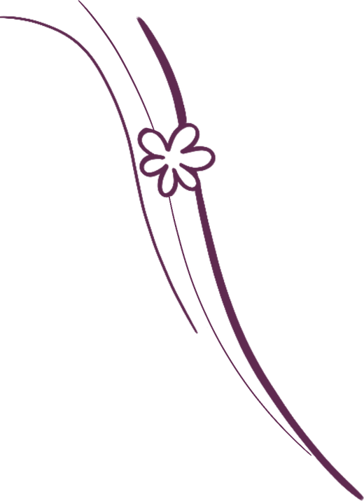
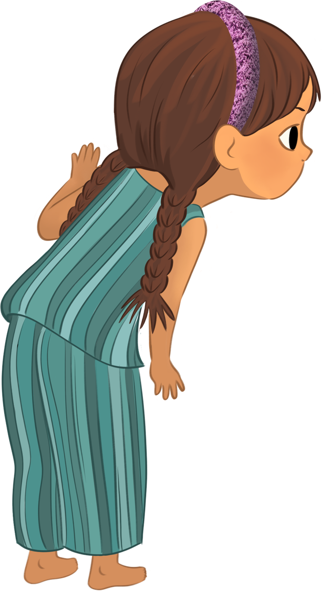
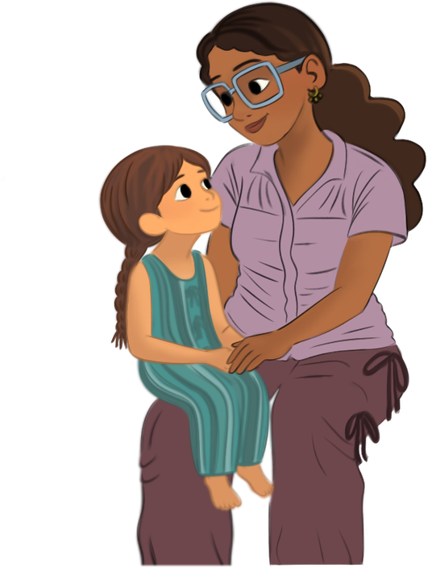

About The Woo Cycle
Every big conversation begins with a small question
The Woo Cycle is a picture book created to help children, families and educators talk about bodies with confidence, curiosity and care.
It isn't just a book about periods.
It's a different beginning.


Our story
It began with a simple question.
What if a child's very first conversation about bodies didn't feel awkward at all?
Too many families want to have these conversations, but don't know where to begin. By the time many children learn about menstruation, confusion, embarrassment and misinformation have already taken root.
We wanted to create something different.
Not another lesson.
Not another textbook.
A story.
One that uses imagination instead of fear, gentle metaphors instead of complicated jargon, and curiosity instead of shame. A story that children want to return to again and again, while giving parents and carers the confidence to answer life's biggest little questions.
The people behind it
Created with children, not just for children
One of the most special parts of The Woo Cycle is that it wasn't created by adults alone.
Over two years, founder Marlou Cornelissen worked alongside her daughter James, whose questions, ideas and imagination helped shape the story from the very beginning.
Together with illustrator Maia Moore, they explored characters, language and illustrations through conversations with families, educators and children — refining every page to create something that felt warm, safe and welcoming.

When early readers of The Woo Cycle described the characters as feeling like a hug, we knew we'd made exactly what we hoped for.
Why it matters
The right language, at the right time.
Across the world, many children still receive little or no meaningful menstrual education before they experience puberty. Yet these first conversations can shape confidence, body literacy and wellbeing for years to come.
The Woo Cycle exists to make those conversations easier — not by overwhelming children with information, but by giving them the right language at the right time, in a way that feels natural, reassuring and joyful.
More than a book
The beginning of something bigger.
Together with families, educators, libraries, schools, community organisations and supporters, we're building a movement that helps every child grow up with confidence rather than confusion.
Every book purchased, every partner who joins us and every supporter who contributes helps place The Woo Cycle into the hands of more children — and the adults who care for them.
Be first to see the cover reveal.
Join the Woo Circle and we'll send you the reveal, launch news and a free family conversation guide.
No spam, ever. Unsubscribe any time.